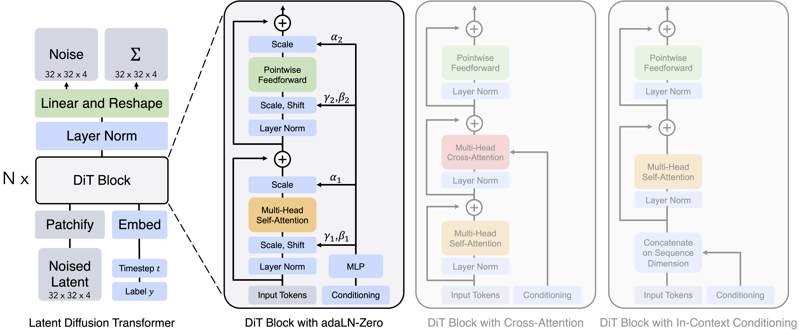

DiT (Scalable Diffusion Models with Transformers)

太好了，這張圖就是 DiT（Diffusion Transformer） 家族的典型模組。下面用「歷史 → 解痛點 → 能做什麼 → 誰在用」四段超清楚帶你過一遍。
1) DiT 的小歷史
- 2020–2022： 主流擴散模型都用 U-Net 當骨幹（如 DDPM、Latent Diffusion）。
- 2022/2023：DiT 提出：把 LDM 的 U-Net 換成 Vision Transformer，把潛在特徵「patchify → 送進 Transformer」，並用簡潔的條件注入（如 adaLN-Zero）。結果顯示：模型/序列越大，FID 越穩定下降，而且在 ImageNet 256/512 上拿到 SOTA。(arXiv)
2) 它解決了哪些痛點？
- 可擴展性（Scaling law）：U-Net 放大常受限；Transformer 易於堆深/堆寬、拿到更好的算力並行（張量並行、Flash-Attention 等），算力↑ → 質量穩步↑。(arXiv)
- 全域關係：自注意力能在單步就看全圖（或時空）token，長距依賴與高解析度表現更穩。(CVF Open Access)
- 條件融合更自然：把時間步、標籤或文字 token 一起丟進 Transformer；像 SD3 的 MMDiT 甚至把文字/影像各自用獨立權重，但在注意力時合併序列，對齊更好。(Stability AI)
- 與 LLM 工程生態對齊：可直接複用 Transformer 訓練技巧與基礎設施，特別對大型影像/影片生成很關鍵。(yenchenlin.github.io)
3) 可用於哪些任務？
- 影像生成：類別條件或文字條件的 T2I（text-to-image）、高解析度合成、修復/編輯。(arXiv)
- 多模態生成：文字與影像 token 同場協作（MMDiT/雙流→單流等設計）。(Stability AI)
- 影片生成：把影像的空間 token 擴展到時空 patch，Transformer 做全域時空注意力。(OpenAI)
4) 目前哪些模型用了（或基於）DiT？
- 原始 DiT（Peebles & Xie）— 以 ViT 替代 U-Net 的 LDM 骨幹，ImageNet 上達 SOTA。(CVF Open Access)
- Stable Diffusion 3 / 3.5— 採用 MMDiT（Multimodal DiT），文字/影像分別一套權重、注意力時合併序列。(Stability AI)
- PixArt-α / PixArt-Σ— 以 DiT 為核心的 T2I，主打高效訓練與最高可到 4K 解析度。(arXiv)
- Hunyuan-DiT— 騰訊開源的 T2I Diffusion Transformer，中英文理解細緻。(GitHub)
- HunyuanVideo— 開源影片生成，採 Transformer 全注意力的擴散式影片骨幹（DiT 系譜）。(GitHub)
- FLUX.1（Black Forest Labs）— 以 Diffusion Transformer / MMDiT 類設計為核心的 T2I 家族。(Hugging Face)
- OpenAI Sora— 官方技術頁明講「Sora is a diffusion transformer」，以時空 patch運作的可擴展影片模型。(OpenAI)
一句話總結
DiT = 把擴散的「去噪骨幹」換成 Transformer。 它帶來更好的可擴展性、全域建模與多模態融合，因此從高畫質影像到長時長影片的生成，最新一代模型多半都往 DiT/MMDiT 系列演進。